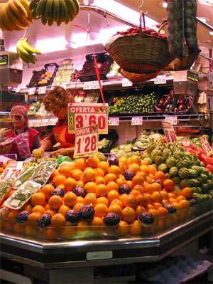

不要用alt文本代替图像的caption，在这种情况下，应考虑将img放入一个figure元素，并添加一个figcaption元素
当前Web上用的最广泛的三种格式是GIF、PNG、JPG
| 格式 | 用法 | 颜色 | 索引色（基本） | alpha透明 |
|---|---|---|---|---|
| JPG | 适用于大多数照片，以及其他颜色较多且可接受一些质量损失的图像 | 1600万以上 | -- | -- |
| PNG-8 | 适用于标识、重复的图案以及其他颜色较少的图像或具有连续颜色的图像 | 256 | 支持 | 支持 |
| PNG-24 | 与PNG-8相似，不过支持颜色更多的图像，适用于颜色丰富且质量要求高的照片 | 1600万以上 | 支持 | -- |
| PNG-32 | 与PNG-24相似，不过支持具有alpha透明的图像 | 1600万以上 | -- | 支持 |
| GIF | 用法与PNG-8相似，在大多数情况下应使用PNG-8 | 256 | 支持 | -- |
用img元素可以在页面中放置各种各样的图像，如果图像是页面设计的一部分，而不是内容的一部分，则应使用CSS background-image属性引入改图像，而不是使用img标记

使用alt属性，可以为图像添加一段描述性文本，当图像出于某种原因不显示的时候，就将这段文字显示出来
不要用alt文本代替图像的caption，在这种情况下，应考虑将img放入一个figure元素，并添加一个figcaption元素
可以使用width和height属性来指定图像尺寸，这样如果图像加载过慢，浏览器会预留空间给图片，保持布局稳定
如果只设置width属性或height属性，图像会等比例的放大会缩小，如果2个属性都设置了，那图像就会根据指定的大小显示，可能会使图片变形。
我们在浏览器选项卡、历史记录、书签页、收藏夹和地址栏中看到的小图标成为favicon，这个词是favorites ico(收藏夹图标)的简称
创建一个至少为16×16的图像，将图标的背景设为透明的，并保存为ICO格式，文件名为favicon.ico，ICO文件允许在同一个文件中包含多个不同尺寸的同名文件
在<head>标签里加上一行<link rel="shortcut icon" href="favicon.ico" />
还可以创建一个或多个触屏图标，即在苹果及其他触屏设备上将网站添加到主屏幕上时要显示的图标，iPhone和iPod touch的图标大小为57×57或114×114（对于Retina显示屏），iPad的图标大小为72×72或144×144（对于Retina显示屏），Android也支持这些图标
为触屏设备至少创建一个图像，并保存为PNG格式，命名为：apple-touch-icon.png
在<head>标签里加上一行<link rel="apple-touch-icon" href="apple-touch-icon.png" />